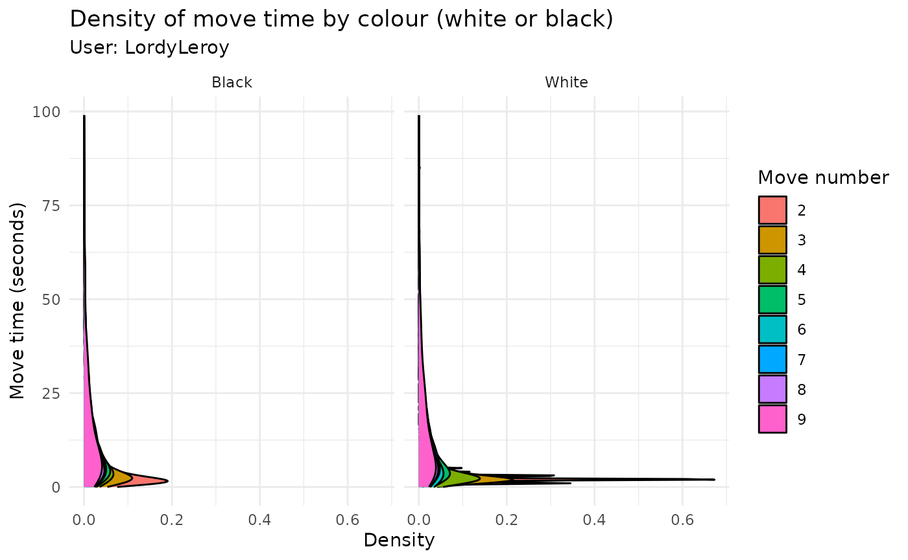
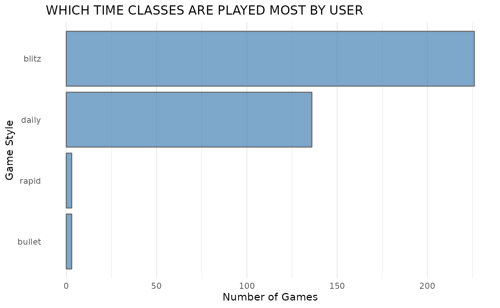
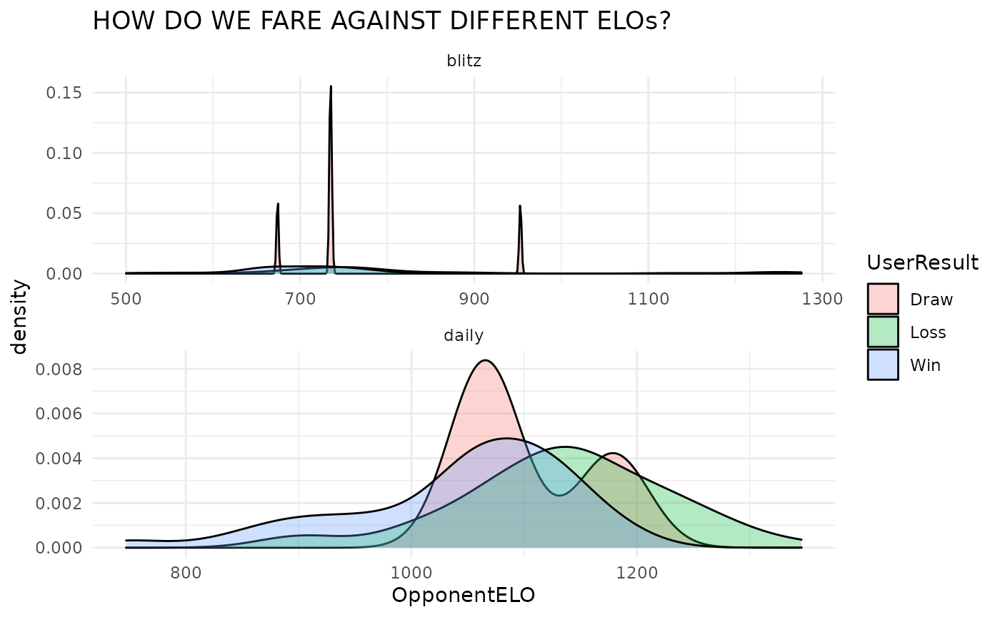

Using the chessR Package
Jason Zivkovic
2022-08-10
Source:vignettes/using_chessR_package.Rmd
using_chessR_package.RmdOverview
This package is designed to allow users to extract game data from popular online chess platforms. The platforms currently supported in this package include:
These websites offer a very convenient set of APIs to be able to access data and documentation to these can be found here for chess.com and here for Lichess.
Installation
You can install the CRAN version of chessR with:
install.packages("chessR")You can install the released version of chessR from GitHub with:
# install.packages("devtools")
devtools::install_github("JaseZiv/chessR")Usage
The functions available in this package are designed to enable the extraction of chess game data.
Data Extraction
The functions detailed below relate to extracting data from the chess gaming sites currently supported in this package.
Raw Game Data
The game extraction functions can take a vector of either single or multiple usernames. It will output a data frame with all the games played by that user.
As of version 1.2.2, get_raw_chessdotcom() now accepts an additional argument called year_month, a six digit integer of YYYYMM, which allows users to filter on which month(s) data is required for.
The functions are below.
Note: These functions query an API, which is rate limited. The limiting rates for chess.com are unknown. For Lichess, the limit is throttled to 15 games per second. Queries could therefore take a few minutes if you’re querying a lot of games.
# function to extract chess.com game data
chessdotcom_game_data_all_months <- get_raw_chessdotcom(usernames = "JaseZiv")
glimpse(chessdotcom_game_data_all_months)
#> Rows: 406
#> Columns: 25
#> $ GameRules <chr> "chess", "chess", "chess", "chess", "chess", "chess", …
#> $ TimeClass <chr> "blitz", "blitz", "blitz", "blitz", "blitz", "blitz", …
#> $ Event <chr> "Live Chess", "Live Chess", "Live Chess", "Live Chess"…
#> $ Site <chr> "Chess.com", "Chess.com", "Chess.com", "Chess.com", "C…
#> $ Date <chr> "2019-02-12", "2019-02-12", "2019-02-12", "2019-02-12"…
#> $ Round <chr> "-", "-", "-", "-", "-", "-", "-", "-", "-", "-", "-",…
#> $ White <chr> "JaseZiv", "Commander0101", "JaseZiv", "oscarbazan", "…
#> $ Black <chr> "hKotla", "JaseZiv", "oscarbazan", "JaseZiv", "oscarba…
#> $ Result <chr> "0-1", "1-0", "1-0", "1-0", "1-0", "0-1", "0-1", "0-1"…
#> $ CurrentPosition <chr> "rn4nr/pbB1kppp/4pq2/2pp2N1/4P2K/6P1/7P/5B1R w - -", "…
#> $ Timezone <chr> "UTC", "UTC", "UTC", "UTC", "UTC", "UTC", "UTC", "UTC"…
#> $ ECO <chr> "C00", "A40", "B00", "D02", "B00", "B40", "B00", "A00"…
#> $ ECOUrl <chr> "https://www.chess.com/openings/French-Defense-Reti-Sp…
#> $ UTCDate <chr> "2019.02.12", "2019.02.12", "2019.02.12", "2019.02.12"…
#> $ UTCTime <chr> "05:44:13", "07:45:57", "07:54:52", "07:55:50", "08:02…
#> $ WhiteElo <chr> "867", "757", "819", "792", "808", "797", "821", "773"…
#> $ BlackElo <chr> "1102", "702", "783", "738", "783", "859", "922", "771…
#> $ TimeControl <chr> "180", "180", "180", "180", "180", "180", "180", "180"…
#> $ Termination <chr> "hKotla won on time", "Commander0101 won on time", "Ja…
#> $ StartTime <chr> "05:44:13", "07:45:57", "07:54:52", "07:55:50", "08:02…
#> $ EndDate <chr> "2019-02-12", "2019-02-12", "2019-02-12", "2019-02-12"…
#> $ EndTime <chr> "05:48:35", "07:51:41", "07:55:21", "08:01:40", "08:07…
#> $ Link <chr> "https://www.chess.com/game/live/3452526692", "https:/…
#> $ Moves <chr> "1. e4 {[%clk 0:02:52.8]} 1... e6 {[%clk 0:02:59.8]} 2…
#> $ Username <chr> "JaseZiv", "JaseZiv", "JaseZiv", "JaseZiv", "JaseZiv",…
# function to extract chess.com game data
chessdotcom_hikaru_recent <- get_raw_chessdotcom(usernames = "Hikaru", year_month = c(202104:202105))
glimpse(chessdotcom_hikaru_recent)
#> Rows: 903
#> Columns: 28
#> $ GameRules <chr> "chess", "chess", "chess", "chess", "chess", "chess", …
#> $ TimeClass <chr> "bullet", "bullet", "bullet", "bullet", "bullet", "bul…
#> $ Event <chr> "Live Chess", "Live Chess", "Live Chess", "Live Chess"…
#> $ Site <chr> "Chess.com", "Chess.com", "Chess.com", "Chess.com", "C…
#> $ Date <chr> "2021-04-01", "2021-04-01", "2021-04-01", "2021-04-01"…
#> $ Round <chr> "-", "-", "-", "-", "-", "-", "-", "-", "-", "-", "-",…
#> $ White <chr> "731291", "Hikaru", "GMSrinath", "Hikaru", "Msb2", "Hi…
#> $ Black <chr> "Hikaru", "SchmakAttack", "Hikaru", "Sanan_Sjugirov", …
#> $ Result <chr> "0-1", "1-0", "0-1", "0-1", "0-1", "1-0", "0-1", "1-0"…
#> $ Tournament <chr> "https://www.chess.com/tournament/live/bullet-chess-ch…
#> $ CurrentPosition <chr> "1r1q1r1k/4n2p/p2pn1pP/1ppB4/P3Pp2/2NP4/1PP2PP1/2KR3R …
#> $ Timezone <chr> "UTC", "UTC", "UTC", "UTC", "UTC", "UTC", "UTC", "UTC"…
#> $ ECO <chr> "B06", "A06", "A04", "A04", "A40", "A06", "B06", "A04"…
#> $ ECOUrl <chr> "https://www.chess.com/openings/Modern-Defense-with-1-…
#> $ UTCDate <chr> "2021.04.01", "2021.04.01", "2021.04.01", "2021.04.01"…
#> $ UTCTime <chr> "16:00:00", "16:02:58", "16:05:37", "16:08:38", "16:11…
#> $ WhiteElo <chr> "2625", "3500", "2916", "3486", "2851", "3487", "3012"…
#> $ BlackElo <chr> "3500", "2792", "3501", "2956", "3486", "2924", "3488"…
#> $ TimeControl <chr> "60", "60", "60", "60", "60", "60", "60", "60", "60", …
#> $ Termination <chr> "Hikaru won by resignation", "Hikaru won by resignatio…
#> $ StartTime <chr> "16:00:00", "16:02:58", "16:05:37", "16:08:38", "16:11…
#> $ EndDate <chr> "2021-04-01", "2021-04-01", "2021-04-01", "2021-04-01"…
#> $ EndTime <chr> "16:01:09", "16:04:06", "16:08:15", "16:10:50", "16:13…
#> $ Link <chr> "https://www.chess.com/game/live/11031846815", "https:…
#> $ Moves <chr> "1. e4 {[%clk 0:00:59.9]} 1... g6 {[%clk 0:00:59.9]} 2…
#> $ SetUp <chr> NA, NA, NA, NA, NA, NA, NA, NA, NA, NA, NA, NA, NA, NA…
#> $ FEN <chr> NA, NA, NA, NA, NA, NA, NA, NA, NA, NA, NA, NA, NA, NA…
#> $ Username <chr> "Hikaru", "Hikaru", "Hikaru", "Hikaru", "Hikaru", "Hik…
# function to extract lichess game data
lichess_game_data <- get_raw_lichess("Georges")
glimpse(lichess_game_data)
#> Rows: 6
#> Columns: 19
#> $ Event <chr> "Casual Rapid game", "Rated Blitz game", "Rated Rapid …
#> $ Site <chr> "https://lichess.org/lmudvufi", "https://lichess.org/l…
#> $ Date <chr> "2013.07.13", "2013.07.13", "2013.07.13", "2013.07.13"…
#> $ White <chr> "baninoyz", "gevorg", "Gul_Sno", "Burina", "georges", …
#> $ Black <chr> "georges", "georges", "georges", "georges", "Burina", …
#> $ Result <chr> "1-0", "1-0", "1-0", "0-1", "1-0", "0-1"
#> $ UTCDate <chr> "2013.07.13", "2013.07.13", "2013.07.13", "2013.07.13"…
#> $ UTCTime <chr> "18:31:50", "18:25:16", "18:14:26", "18:04:10", "17:50…
#> $ WhiteElo <chr> "1325", "1692", "1724", "1692", "1500", "1322"
#> $ BlackElo <chr> "1248", "1898", "1605", "1806", "1703", "1500"
#> $ Variant <chr> "Standard", "Standard", "Standard", "Standard", "Stand…
#> $ TimeControl <chr> "900+1", "180+0", "600+1", "300+2", "300+2", "1800+0"
#> $ ECO <chr> "B12", "C01", "B07", "D00", "C40", "B20"
#> $ Opening <chr> "Caro-Kann Defense", "French Defense: Exchange Variati…
#> $ Termination <chr> "Time forfeit", "Time forfeit", "Time forfeit", "Norma…
#> $ Moves <chr> "1. e4 c6 2. d4 g5 3. Bxg5 h6 4. Bf4 Bg7 5. Nf3 Nf6 6.…
#> $ WhiteRatingDiff <chr> NA, "14", "7", "-6", "306", "-5"
#> $ BlackRatingDiff <chr> NA, "-160", "-89", "92", "-11", "105"
#> $ Username <chr> "Georges", "Georges", "Georges", "Georges", "Georges",…Analysis Data
The following function will extract the same data that the get_raw_chessdotcom() function will, however this function will also include additional columns to make analysing data easier.
The function can be used either on a single player, or a character vector of multiple players.
Note: This is only available for chess.com extracts
chess_analysis_single <- get_game_data("JaseZiv")
glimpse(chess_analysis_single)
#> Rows: 405
#> Columns: 36
#> $ rules <chr> "chess", "chess", "chess", "chess", "chess", "chess", …
#> $ time_class <chr> "blitz", "blitz", "blitz", "blitz", "blitz", "blitz", …
#> $ Event <chr> "Live Chess", "Live Chess", "Live Chess", "Live Chess"…
#> $ Site <chr> "Chess.com", "Chess.com", "Chess.com", "Chess.com", "C…
#> $ Date <date> 2019-02-12, 2019-02-12, 2019-02-12, 2019-02-12, 2019-…
#> $ Round <chr> "-", "-", "-", "-", "-", "-", "-", "-", "-", "-", "-",…
#> $ White <chr> "JaseZiv", "Commander0101", "JaseZiv", "oscarbazan", "…
#> $ Black <chr> "hKotla", "JaseZiv", "oscarbazan", "JaseZiv", "oscarba…
#> $ Result <chr> "0-1", "1-0", "1-0", "1-0", "1-0", "0-1", "0-1", "0-1"…
#> $ CurrentPosition <chr> "rn4nr/pbB1kppp/4pq2/2pp2N1/4P2K/6P1/7P/5B1R w - -", "…
#> $ Timezone <chr> "UTC", "UTC", "UTC", "UTC", "UTC", "UTC", "UTC", "UTC"…
#> $ ECO <chr> "C00", "A40", "B00", "D02", "B00", "B40", "B00", "A00"…
#> $ ECOUrl <chr> "https://www.chess.com/openings/French-Defense-Reti-Sp…
#> $ UTCDate <chr> "2019.02.12", "2019.02.12", "2019.02.12", "2019.02.12"…
#> $ UTCTime <chr> "05:44:13", "07:45:57", "07:54:52", "07:55:50", "08:02…
#> $ WhiteElo <chr> "867", "757", "819", "792", "808", "797", "821", "773"…
#> $ BlackElo <chr> "1102", "702", "783", "738", "783", "859", "922", "771…
#> $ TimeControl <chr> "180", "180", "180", "180", "180", "180", "180", "180"…
#> $ Termination <chr> "hKotla won on time", "Commander0101 won on time", "Ja…
#> $ StartTime <chr> "05:44:13", "07:45:57", "07:54:52", "07:55:50", "08:02…
#> $ EndDate <date> 2019-02-12, 2019-02-12, 2019-02-12, 2019-02-12, 2019-…
#> $ EndTime <chr> "05:48:35", "07:51:41", "07:55:21", "08:01:40", "08:07…
#> $ Link <chr> "https://www.chess.com/game/live/3452526692", "https:/…
#> $ Moves <chr> "\n1. e4 {[%clk 0:02:52.8]} 1... e6 {[%clk 0:02:59.8]}…
#> $ winner <chr> "Black", "White", "White", "White", "White", "Black", …
#> $ Username <chr> "JaseZiv", "JaseZiv", "JaseZiv", "JaseZiv", "JaseZiv",…
#> $ n_Moves <dbl> 21, 28, 5, 29, 25, 10, 26, 31, 35, 41, 29, 7, 35, 33, …
#> $ UserOpponent <chr> "hKotla", "Commander0101", "oscarbazan", "oscarbazan",…
#> $ UserColour <chr> "White", "Black", "White", "Black", "White", "Black", …
#> $ OpponentColour <chr> "Black", "White", "Black", "White", "Black", "White", …
#> $ UserELO <dbl> 867, 702, 819, 738, 808, 859, 821, 773, 744, 722, 680,…
#> $ OpponentELO <dbl> 1102, 757, 783, 792, 783, 797, 922, 771, 850, 875, 604…
#> $ UserResult <chr> "Loss", "Loss", "Win", "Loss", "Win", "Win", "Loss", "…
#> $ DaysTaken <drtn> 0 days, 0 days, 0 days, 0 days, 0 days, 0 days, 0 day…
#> $ GameEnding <chr> "on time", "on time", "by checkmate", "on time", "on t…
#> $ Opening <chr> "Defense-Reti-Spielmann-Attack", "Pawn-Opening-Polish-…Leaderboards
The leaderboards of each game platform can be extracted for a number of different games available on each platform. Each are discussed below:
Chess.com
The below function allows the user to extract the top 50 players of each game type specified. Game types available include:
“daily”,“daily960”, “live_rapid”, “live_blitz”, “live_bullet”, “live_bughouse”, “live_blitz960”, “live_threecheck”, “live_crazyhouse”, “live_kingofthehill”, “lessons”, “tactics”
The usernames that are contained in the results can then be passed to get_raw_chessdotcom outlined above.
daily_leaders <- chessdotcom_leaderboard(game_type = "daily")
glimpse(daily_leaders)
#> Rows: 50
#> Columns: 16
#> $ player_id <int> 7848044, 4147249, 4767295, 21510544, 2883344, 41078100, 19…
#> $ url <chr> "https://www.chess.com/member/francisbegbie", "https://www…
#> $ username <chr> "francisbegbie", "mizant", "XQUSE", "Rainbow68", "MartinMa…
#> $ score <int> 2622, 2589, 2543, 2534, 2513, 2512, 2499, 2497, 2494, 2492…
#> $ rank <int> 1, 2, 3, 4, 5, 6, 7, 8, 9, 10, 11, 12, 13, 14, 15, 16, 17,…
#> $ country <chr> "https://api.chess.com/pub/country/XE", "https://api.chess…
#> $ title <chr> "FM", "FM", NA, NA, "FM", "FM", NA, NA, NA, "NM", NA, "FM"…
#> $ name <chr> "Andy Mack", "Aleksandar Randjelovic", "Osorio David", "Ra…
#> $ status <chr> "premium", "premium", "premium", "premium", "premium", "pr…
#> $ avatar <chr> "https://images.chesscomfiles.com/uploads/v1/user/7848044.…
#> $ trend_score <df[,2]> <data.frame[26 x 2]>
#> $ trend_rank <df[,2]> <data.frame[26 x 2]>
#> $ flair_code <chr> "diamond_traditional", "diamond_traditional", "diamond_…
#> $ win_count <int> 676, 211, 717, 144, 80, 62, 392, 28, 56, 386, 14, 286, …
#> $ loss_count <int> 1, 0, 2, 21, 21, 5, 2, 0, 14, 7, 0, 204, 0, 26, 3, 0, 0, 3…
#> $ draw_count <int> 3, 6, 1, 19, 12, 30, 4, 3, 11, 11, 2, 36, 1, 20, 1, 2, 2, …Lichess
The get_lichess_leaderboard() function takes in two parameters; how many players you want returned (with a max of 200 being returned) and the speed variant. Speed variants include;
“ultraBullet”, “bullet”, “blitz”, “rapid”, “classical”, “chess960”, “crazyhouse”, “antichess”, “atomic”, “horde”, “kingOfTheHill”, “racingKings”, “threeCheck”
lichess_leaders <- lichess_leaderboard(top_n_players = 10, speed_variant = "blitz")
glimpse(lichess_leaders)Analysis Functions
This section will detail some of the functions to use for extracting information from the raw games data extracts for analysis.
Number of moves in the game
To be able to see how many moves a game lasted, the return_num_moves function can be used.
It will parse through the Moves column in the extracted data frame and return a vector of moves, each one being for each game.
# function to extract the number of moves in each game
chessdotcom_game_data_all_months$nMoves <- return_num_moves(moves_string = chessdotcom_game_data_all_months$Moves)
# inspect output
head(chessdotcom_game_data_all_months[, c("Moves", "nMoves")])
#> Moves
#> 1 1. e4 {[%clk 0:02:52.8]} 1... e6 {[%clk 0:02:59.8]} 2. g3 {[%clk 0:02:49.2]} 2... b6 {[%clk 0:02:58.3]} 3. Nf3 {[%clk 0:02:47.5]} 3... Bb7 {[%clk 0:02:57.2]} 4. d3 {[%clk 0:02:42.3]} 4... Qf6 {[%clk 0:02:54.3]} 5. Na3 {[%clk 0:02:34.8]} 5... d5 {[%clk 0:02:52.4]} 6. Bg5 {[%clk 0:02:21.4]} 6... Qxb2 {[%clk 0:02:49.7]} 7. Rb1 {[%clk 0:02:18.7]} 7... Qxa3 {[%clk 0:02:48.2]} 8. Qc1 {[%clk 0:02:02.5]} 8... Qc3+ {[%clk 0:02:45.8]} 9. Qd2 {[%clk 0:01:46.2]} 9... Qa3 {[%clk 0:02:42.5]} 10. Bf4 {[%clk 0:01:39.9]} 10... Kd7 {[%clk 0:02:38.6]} 11. Qb4 {[%clk 0:01:27.2]} 11... Bxb4+ {[%clk 0:02:36.1]} 12. Ke2 {[%clk 0:01:14.6]} 12... Bc5 {[%clk 0:02:29]} 13. Ng5 {[%clk 0:01:08.9]} 13... Ke7 {[%clk 0:02:21.9]} 14. Bh3 {[%clk 0:01:00]} 14... Qxa2 {[%clk 0:02:19.3]} 15. Rb5 {[%clk 0:00:50.1]} 15... Qxc2+ {[%clk 0:02:16.1]} 16. Kf3 {[%clk 0:00:43.7]} 16... Qxf2+ {[%clk 0:02:13.7]} 17. Kg4 {[%clk 0:00:31]} 17... Qe2+ {[%clk 0:02:11.4]} 18. Kh4 {[%clk 0:00:27.3]} 18... Qxd3 {[%clk 0:02:07.9]} 19. Bf1 {[%clk 0:00:20]} 19... Qd4 {[%clk 0:01:55.1]} 20. Bxc7 {[%clk 0:00:13.2]} 20... Qf6 {[%clk 0:01:51.6]} 21. Rxc5 {[%clk 0:00:03.4]} 21... bxc5 {[%clk 0:01:49.3]} 0-1
#> 2 1. d4 {[%clk 0:02:59.9]} 1... b5 {[%clk 0:02:58.2]} 2. e3 {[%clk 0:02:58.5]} 2... e6 {[%clk 0:02:57]} 3. Nf3 {[%clk 0:02:57.5]} 3... Bb7 {[%clk 0:02:55.4]} 4. Be2 {[%clk 0:02:52.9]} 4... Nc6 {[%clk 0:02:54.7]} 5. c3 {[%clk 0:02:51.4]} 5... Bd6 {[%clk 0:02:50.2]} 6. b4 {[%clk 0:02:49.6]} 6... a5 {[%clk 0:02:46.2]} 7. a3 {[%clk 0:02:46]} 7... axb4 {[%clk 0:02:39.7]} 8. a4 {[%clk 0:02:43]} 8... bxa4 {[%clk 0:02:37.2]} 9. cxb4 {[%clk 0:02:40.3]} 9... Nxb4 {[%clk 0:02:32.9]} 10. Na3 {[%clk 0:02:30.6]} 10... Qf6 {[%clk 0:02:25.8]} 11. Rb1 {[%clk 0:02:21.1]} 11... Qf5 {[%clk 0:02:21.8]} 12. Rb2 {[%clk 0:02:05.4]} 12... Qb1 {[%clk 0:02:21.3]} 13. Nb5 {[%clk 0:01:55.6]} 13... Qe4 {[%clk 0:02:11.7]} 14. Nxc7+ {[%clk 0:01:52]} 14... Kd8 {[%clk 0:02:07]} 15. Nxa8 {[%clk 0:01:49.6]} 15... Bxa8 {[%clk 0:02:05.8]} 16. O-O {[%clk 0:01:47.2]} 16... Qg4 {[%clk 0:01:59.6]} 17. Re1 {[%clk 0:01:32.4]} 17... Nf6 {[%clk 0:01:53.6]} 18. Kf1 {[%clk 0:01:29.1]} 18... Nbd5 {[%clk 0:01:32]} 19. h3 {[%clk 0:01:14.1]} 19... Nc3 {[%clk 0:01:30.1]} 20. Qc2 {[%clk 0:01:04.6]} 20... Qe4 {[%clk 0:01:23.2]} 21. Qxc3 {[%clk 0:01:00]} 21... Nh5 {[%clk 0:01:12.8]} 22. Bd3 {[%clk 0:00:56.6]} 22... Qd5 {[%clk 0:00:55.7]} 23. Rb5 {[%clk 0:00:47.2]} 23... Qxb5 {[%clk 0:00:38.2]} 24. Bxb5 {[%clk 0:00:45]} 24... Nf6 {[%clk 0:00:28.7]} 25. Qa5+ {[%clk 0:00:42.6]} 25... Kc8 {[%clk 0:00:24.6]} 26. Qxa8+ {[%clk 0:00:39.4]} 26... Kc7 {[%clk 0:00:22.6]} 27. Qxh8 {[%clk 0:00:34.5]} 27... Bb4 {[%clk 0:00:00.2]} 28. Rd1 {[%clk 0:00:30]} 1-0
#> 3 1. e4 {[%clk 0:02:59.8]} 1... a6 {[%clk 0:02:58.5]} 2. c3 {[%clk 0:02:58.7]} 2... f6 {[%clk 0:02:55.7]} 3. Na3 {[%clk 0:02:57.5]} 3... h6 {[%clk 0:02:52.2]} 4. Qh5+ {[%clk 0:02:52]} 4... g6 {[%clk 0:02:43]} 5. Qxg6# {[%clk 0:02:50.4]} 1-0
#> 4 1. Nf3 {[%clk 0:02:59.9]} 1... d5 {[%clk 0:02:59.3]} 2. d4 {[%clk 0:02:58.7]} 2... f6 {[%clk 0:02:57.2]} 3. g4 {[%clk 0:02:55.3]} 3... Bxg4 {[%clk 0:02:53.4]} 4. Nh4 {[%clk 0:02:49]} 4... Nc6 {[%clk 0:02:51.2]} 5. f3 {[%clk 0:02:47.7]} 5... Be6 {[%clk 0:02:45.5]} 6. b3 {[%clk 0:02:41.1]} 6... Nh6 {[%clk 0:02:42.3]} 7. Rg1 {[%clk 0:02:36]} 7... b5 {[%clk 0:02:38.6]} 8. Nd2 {[%clk 0:02:33.3]} 8... Nxd4 {[%clk 0:02:35.9]} 9. c3 {[%clk 0:02:30.7]} 9... Ndf5 {[%clk 0:02:25.2]} 10. e4 {[%clk 0:02:29.3]} 10... Nxh4 {[%clk 0:02:23.1]} 11. exd5 {[%clk 0:02:27.4]} 11... Bxd5 {[%clk 0:02:20.7]} 12. f4 {[%clk 0:02:23.2]} 12... Bf3 {[%clk 0:02:15.9]} 13. Bxb5+ {[%clk 0:02:19.9]} 13... Kf7 {[%clk 0:02:05.1]} 14. Nxf3 {[%clk 0:02:18.3]} 14... Nxf3+ {[%clk 0:02:03]} 15. Qxf3 {[%clk 0:02:16.2]} 15... e6 {[%clk 0:01:54.8]} 16. h4 {[%clk 0:02:01.4]} 16... Qd5 {[%clk 0:01:49.1]} 17. c4 {[%clk 0:01:50.3]} 17... Qd8 {[%clk 0:01:25.6]} 18. f5 {[%clk 0:01:41.9]} 18... Nxf5 {[%clk 0:01:19.3]} 19. h5 {[%clk 0:01:33.8]} 19... h6 {[%clk 0:01:10.1]} 20. Qg2 {[%clk 0:01:18.6]} 20... Rc8 {[%clk 0:01:04.4]} 21. Qg6+ {[%clk 0:01:16.5]} 21... Ke7 {[%clk 0:00:54.1]} 22. Ba3+ {[%clk 0:01:15.2]} 22... Nd6 {[%clk 0:00:39.8]} 23. Kf2 {[%clk 0:00:58.5]} 23... c6 {[%clk 0:00:38.3]} 24. Rae1 {[%clk 0:00:56.9]} 24... Qb6+ {[%clk 0:00:36]} 25. Kg2 {[%clk 0:00:54.3]} 25... Kd8 {[%clk 0:00:20.7]} 26. Rxe6 {[%clk 0:00:43.4]} 26... Kd7 {[%clk 0:00:08.5]} 27. Rge1 {[%clk 0:00:37.5]} 27... Nxb5 {[%clk 0:00:03]} 28. Rd1+ {[%clk 0:00:32.3]} 28... Kc7 {[%clk 0:00:00.4]} 29. Qg3+ {[%clk 0:00:25]} 1-0
#> 5 1. e4 {[%clk 0:02:59.2]} 1... Nc6 {[%clk 0:02:59.1]} 2. g3 {[%clk 0:02:57.5]} 2... e6 {[%clk 0:02:54.1]} 3. b3 {[%clk 0:02:47.5]} 3... d6 {[%clk 0:02:53.1]} 4. Nc3 {[%clk 0:02:44.9]} 4... e5 {[%clk 0:02:52]} 5. Nf3 {[%clk 0:02:35.7]} 5... g6 {[%clk 0:02:46.9]} 6. Ba3 {[%clk 0:02:30.8]} 6... Bg4 {[%clk 0:02:42.2]} 7. Be2 {[%clk 0:02:25.6]} 7... h5 {[%clk 0:02:40.3]} 8. Ng5 {[%clk 0:02:20.7]} 8... Qxg5 {[%clk 0:02:33.9]} 9. h3 {[%clk 0:02:18.2]} 9... Be6 {[%clk 0:02:25.6]} 10. h4 {[%clk 0:02:15]} 10... Qf6 {[%clk 0:02:20.4]} 11. Bc4 {[%clk 0:02:00.7]} 11... g5 {[%clk 0:02:13.3]} 12. O-O {[%clk 0:01:58.1]} 12... gxh4 {[%clk 0:02:11.3]} 13. gxh4 {[%clk 0:01:55.4]} 13... Nge7 {[%clk 0:02:01.3]} 14. f4 {[%clk 0:01:38.9]} 14... Rg8+ {[%clk 0:01:59.4]} 15. Kf2 {[%clk 0:01:32.4]} 15... Bg4 {[%clk 0:01:49.6]} 16. Qe1 {[%clk 0:01:25.2]} 16... Qxf4+ {[%clk 0:01:45.8]} 17. Kg1 {[%clk 0:01:22.8]} 17... Bh3+ {[%clk 0:01:38]} 18. Kh1 {[%clk 0:01:07.3]} 18... Qg4 {[%clk 0:01:17.8]} 19. Rg1 {[%clk 0:01:02]} 19... Qf3+ {[%clk 0:01:14.2]} 20. Kh2 {[%clk 0:00:56.9]} 20... Qf4+ {[%clk 0:00:59]} 21. Kh1 {[%clk 0:00:51.9]} 21... Nd4 {[%clk 0:00:49.2]} 22. Rxg8 {[%clk 0:00:49.6]} 22... Nf3 {[%clk 0:00:44.6]} 23. Qf2 {[%clk 0:00:40.6]} 23... Nh2 {[%clk 0:00:08.5]} 24. Qxh2 {[%clk 0:00:34]} 24... Qf3+ {[%clk 0:00:04.7]} 25. Kg1 {[%clk 0:00:22.3]} 1-0
#> 6 1. e4 {[%clk 0:02:59.9]} 1... c5 {[%clk 0:02:57.8]} 2. Nf3 {[%clk 0:02:58.9]} 2... e6 {[%clk 0:02:56]} 3. g3 {[%clk 0:02:57.5]} 3... Qa5 {[%clk 0:02:50.9]} 4. Nc3 {[%clk 0:02:55.9]} 4... Bd6 {[%clk 0:02:38.1]} 5. d3 {[%clk 0:02:41.9]} 5... Nf6 {[%clk 0:02:33.9]} 6. Bd2 {[%clk 0:02:37.8]} 6... e5 {[%clk 0:02:27.5]} 7. Bg2 {[%clk 0:02:35.5]} 7... Qb6 {[%clk 0:02:15.8]} 8. O-O {[%clk 0:02:23.9]} 8... Ng4 {[%clk 0:02:10.8]} 9. Ng5 {[%clk 0:02:19.2]} 9... Qxb2 {[%clk 0:01:52.8]} 10. Qxg4 {[%clk 0:02:13.5]} 10... Qxc2 {[%clk 0:01:42.1]} 0-1
#> nMoves
#> 1 21
#> 2 28
#> 3 5
#> 4 29
#> 5 25
#> 6 10How the game ended
The chess.com data extract doesn’t have how the game ended on its own. To get the game ending on its own, the get_game_ending function can be used.
# function to extract the ending of chess.com data
chessdotcom_game_data_all_months$Ending <- mapply(get_game_ending,
termination_string = chessdotcom_game_data_all_months$Termination,
white = chessdotcom_game_data_all_months$White,
black = chessdotcom_game_data_all_months$Black)
# inspect output
head(chessdotcom_game_data_all_months[, c("Termination", "White", "Black", "Ending")])
#> Termination White Black Ending
#> 1 hKotla won on time JaseZiv hKotla on time
#> 2 Commander0101 won on time Commander0101 JaseZiv on time
#> 3 JaseZiv won by checkmate JaseZiv oscarbazan by checkmate
#> 4 oscarbazan won on time oscarbazan JaseZiv on time
#> 5 JaseZiv won on time JaseZiv oscarbazan on time
#> 6 JaseZiv won on time rojarosy JaseZiv on timeGame Winner
Given two players, one playing on white and the other on black, we want to be able to know the username of the winner. To get this information, use the get_winner function.
# function to extract the winner of each game
chessdotcom_game_data_all_months$Winner <- get_winner(result_column = chessdotcom_game_data_all_months$Result,
white = chessdotcom_game_data_all_months$White,
black = chessdotcom_game_data_all_months$Black)
# inspect output
head(chessdotcom_game_data_all_months[, c("White", "Black", "Result", "Winner")])
#> White Black Result Winner
#> 1 JaseZiv hKotla 0-1 hKotla
#> 2 Commander0101 JaseZiv 1-0 Commander0101
#> 3 JaseZiv oscarbazan 1-0 JaseZiv
#> 4 oscarbazan JaseZiv 1-0 oscarbazan
#> 5 JaseZiv oscarbazan 1-0 JaseZiv
#> 6 rojarosy JaseZiv 0-1 JaseZivLichess clock and move times
Extract the clock time and move times from a Lichess games list, using the lichess_clock_move_time function.
# Get Lichess game data
lichess_game_data <- get_raw_lichess("LordyLeroy")
lichess_game_data_with_time <- lichess_clock_move_time(games_list = lichess_game_data)
head(lichess_game_data_with_time)
#> # A tibble: 6 × 7
#> Site White Black colour move_…¹ clock_time move_…²
#> <chr> <chr> <chr> <chr> <dbl> <Duration> <Durat>
#> 1 https://lichess.org/o… mobi… Lord… White 1 600s (~10 minutes) 0s
#> 2 https://lichess.org/o… mobi… Lord… Black 1 600s (~10 minutes) 0s
#> 3 https://lichess.org/o… mobi… Lord… White 2 587s (~9.78 minutes) 13s
#> 4 https://lichess.org/o… mobi… Lord… Black 2 596s (~9.93 minutes) 4s
#> 5 https://lichess.org/o… mobi… Lord… White 3 567s (~9.45 minutes) 20s
#> 6 https://lichess.org/o… mobi… Lord… Black 3 591s (~9.85 minutes) 5s
#> # … with abbreviated variable names ¹move_number, ²move_timeFor example, plot how move times tend to increase with increased move number in the opening with black, compared to white.
username <- "LordyLeroy"
ggplot(lichess_game_data_with_time %>%
filter((White == username & colour == "White") |
(Black == username & colour == "Black"),
between(move_number, 2, 9),
move_time <= 100),
aes(x = move_time,
fill = as.factor(move_number))) +
geom_density() +
coord_flip() +
labs(x = "Move time (seconds)",
y = "Density",
fill = "Move number",
title = "Density of move time by colour (white or black)",
subtitle = paste0("User: ", username)) +
theme_minimal() +
facet_wrap(~ colour)
Bonus: Basic EDA Analysing Games
This section will perform some exploratory data analysis on the data extracted by get_raw_chessdotcom(), and then having used some of the analysis functions explained above. It is by no means an exhaustive list of topics to analyse, rather, it is designed to give the user a few ideas of what can be done with the analysis data provided.
chessdotcom_game_data_all_months %>%
count(TimeClass) %>%
ggplot(aes(x= reorder(TimeClass,n), y= n)) +
geom_col(fill = "steelblue", colour = "grey40", alpha = 0.7) +
labs(x= "Game Style", y= "Number of Games") +
ggtitle("WHICH TIME CLASSES ARE PLAYED MOST BY USER") +
coord_flip() +
theme_minimal() +
theme(panel.grid.major.y = element_blank())
chessdotcom_game_data_all_months %>%
mutate(MonthEnd = paste(year(EndDate), str_pad(lubridate::month(ymd(EndDate)), 2, side = "left", pad = "0"), sep = "-")) %>%
mutate(UserResult = ifelse(Winner == Username, "Win", ifelse(Winner == "Draw", "Draw", "Loss"))) %>%
group_by(MonthEnd, UserResult) %>%
summarise(n = n()) %>%
mutate(WinPercentage = n / sum(n)) %>%
filter(UserResult == "Win") %>%
ggplot(aes(x= MonthEnd, y= WinPercentage, group=1)) +
geom_line(colour= "steelblue", size=1) +
geom_hline(yintercept = 0.5, linetype = 2, colour = "grey40") +
scale_y_continuous(limits = c(0,1)) +
labs(x= "Month Game Ended", y= "Win %") +
ggtitle("MONTHLY WINNING %") +
theme_minimal()
chessdotcom_game_data_all_months %>%
filter(TimeClass %in% c("blitz", "daily")) %>%
mutate(UserELO = as.numeric(ifelse(Username == White, WhiteElo, BlackElo))) %>%
mutate(MonthEnd = paste(year(EndDate), str_pad(lubridate::month(ymd(EndDate)), 2, side = "left", pad = "0"), sep = "-")) %>%
group_by(MonthEnd, TimeClass) %>%
summarise(AverageELO = mean(UserELO, na.rm = T)) %>%
ggplot(aes(x= MonthEnd, y= AverageELO, group=1)) +
geom_line(colour= "steelblue", size=1) +
labs(x= "Month Game Ended", y= "Average ELO") +
ggtitle("MONTHLY AVERAGE ELO RATING") +
facet_wrap(~ TimeClass, scales = "free_y", ncol = 1) +
theme_minimal()
chessdotcom_game_data_all_months %>%
mutate(OpponentELO = as.numeric(ifelse(Username == White, BlackElo, WhiteElo)),
UserResult = ifelse(Winner == Username, "Win", ifelse(Winner == "Draw", "Draw", "Loss"))) %>%
filter(TimeClass %in% c("blitz", "daily")) %>%
ggplot(aes(x= OpponentELO, fill = UserResult)) +
geom_density(alpha = 0.3) +
ggtitle("HOW DO WE FARE AGAINST DIFFERENT ELOs?") +
facet_wrap(~ TimeClass, scales = "free", ncol = 1) +
theme_minimal()